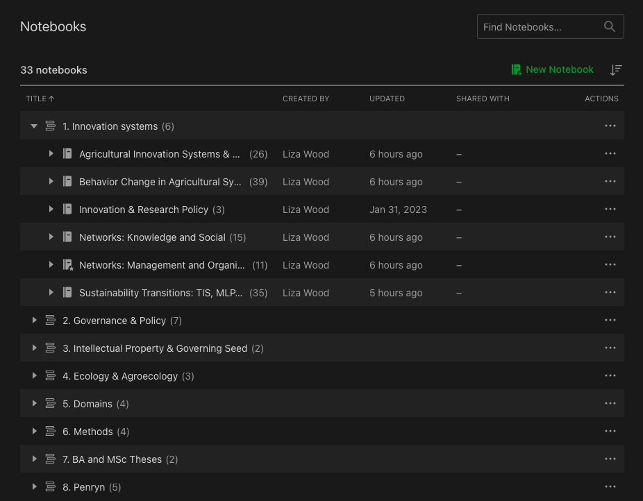
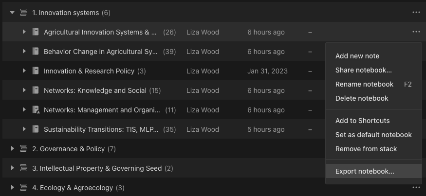
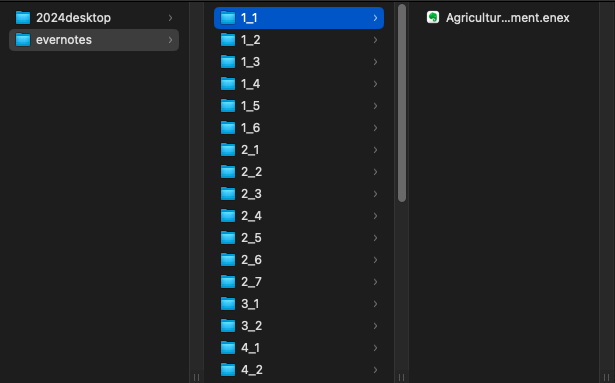

## Identify how many stacks you have
n_stacks <- 8
## Identify the number of notebooks in each stack
## This should be a vector of length = n_stacks,
## each value representing n notebooks
n_notebooks_per_stack <- c(6, 7, 2, 3, 4, 4, 2, 5) Converting Evernote notes (.enex) to markdown (.md)
Note management
For researchers, systematically managing notes can be a game-changer for helping navigate the endless sea of knowledge the we spend our careers accumulating. There are a dozen different styles out there, which is not what I’m here to explain. Instead, this post is specific to my note-taking scenario: Free Evernote is dead, so this post is about exporting notes from Evernote into markdown files using the evernote2md package
I have been an Evernote user for nearly a decade, particularly during my PhD (2018-2023). But as many Reddit threads will tell you, the end of 2023 marked a turning point for Evernote. Gone are the days of limitless free notes and multi-device syncing. So I finally decided to port over my notes from Evernote into a more transportable file type: from .enex of Evernote to .md files that can be used across a range of text editors. Personally, I’ve decided to migrate to Obsidian.
While this post is software specific, there is a general message: try to organize notes in a way that anticipates software phase-out. I don’t want to worry about losing access to my notes because a free trial ends or not know how to even access the raw text of my notes (e.g. Apple Notes).
So, let’s get to it.
1. Re-create a skeleton of your stack and notebook file structure
First, Evernote’s file organization is based on ‘stacks’ which hold ‘notebooks’ which hold ‘notes.’ I’m not going to play under the hood of Evernote to really understand how this is embedded, instead I’m going to keep this relatively simple and manual. Here’s a look at my stack and notebook structure. I have 8 stacks and 33 notesbooks in total.

First, we’re going to just tell R how many stacks we have and then how many notebooks each stack contains.
We’re then going to use these values to create a skeleton of the directory structure that we want to maintain. In total, I have 33 notebooks but they are nested differently, which is why we need to get a little creative.
## Make directories for each notebook, labelled by stack-notebook number
dir_names_pt1 <- unlist(mapply(rep_len, 1:n_stacks, n_notebooks_per_stack))
dir_names_pt2 <- unlist(sapply(n_notebooks_per_stack, function(to) seq(to)))
dir_names <- paste(dir_names_pt1, dir_names_pt2, sep = "_")
length(dir_names)[1] 33head(dir_names, n = 10) [1] "1_1" "1_2" "1_3" "1_4" "1_5" "1_6" "2_1" "2_2" "2_3" "2_4"2. Create directory for Evernote export
Next, we’ll identify where we would like to export the notes. Exporting notes is going to be a manual process (Step 3), and this step is intermediate. In other words, you’ll probably delete this folder when all is said and done, so I’m just going to keep it on my Desktop.
## Identify where you would like to export your notes
export_loc <- '~/Desktop/evernotes/'
## Create the main directory
dir.create(export_loc)
## Create sub-directories based on stack-notebook structureThen we will use our vector of directory names to replicate the structure we have in Evernote to fill as we manually download.
sapply(paste0(export_loc, dir_names), dir.create)3. Manually export Evernotes
Here comes the manual part: exporting notes from Evernote. From what I can tell, the largest unit you can export from Evernote is the ‘notebook,’ so I will do that for all 33 of my notebooks. I click on the three dots suggesting options and select Export notebook.

I then save each notebook into it’s sub-directory. Using this method, each .enex file (containing all of the notes in the notebook) should be saves in its own sub-directory. For your first notebook in the first stack, save in sub-directory 1_1/. For the third notebook in the fifth stack, save in sub-directory 3_5. And so on.

4. Create a destination for the markdown conversions
Just like we created an export location, we now want to create a directory for the markdown files. These are were your new notes will be, each as markdown files in their appropriate sub-directory. Again, I’m just leaving mine on my desktop for now.
## Identify where you would like the markdown files to be
md_loc <- '~/Desktop/obeliskgate/'
## Create the directory
dir.create(md_loc)
## Create sub-directories to mirror the stack-notebook structure
sapply(paste0(md_loc, dir_names), dir.create)5. Convert with the evernote2md package
All of this conversion is possible thanks to the evernote2md package, which relies on one function to run in the in the command line. We can run it via the system() command in R. evernote2md takes an input and output argument, which for us is the export location and md location, applied across sub-directories.
sapply(dir_names, function(x) system(paste('evernote2md',
paste0(export_loc, x),
paste0(md_loc, x))))And that’s it! Now you should have your markdown files in each of your sub-directories.
6. Optional: re-name directories according to notebook names
Now, you might not like the 1_1 naming structure, which is fair. Want to port over your old notebook names? Identify the notebook names from the original export locations then rename the existing filenames in your new markdown location.
## Identify notebook names and pull out just the names (not numbers or extensions)
notebook_names <- stringr::str_remove_all(list.files(export_loc, recursive = T),
"^\\d{1,2}_\\d{1,2}\\/|\\.enex")
## Get the current numeric names of the markdown directories
current_names <- list.files(md_loc, full.names = T)
## Rename by appending notebook names to stack structure
mapply(file.rename, current_names, paste(current_names, notebook_names))